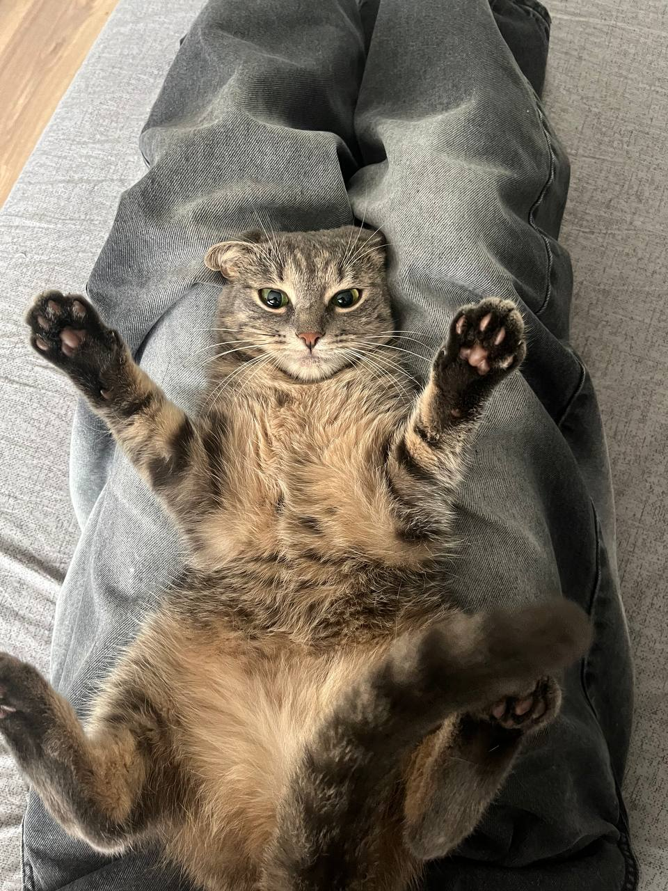
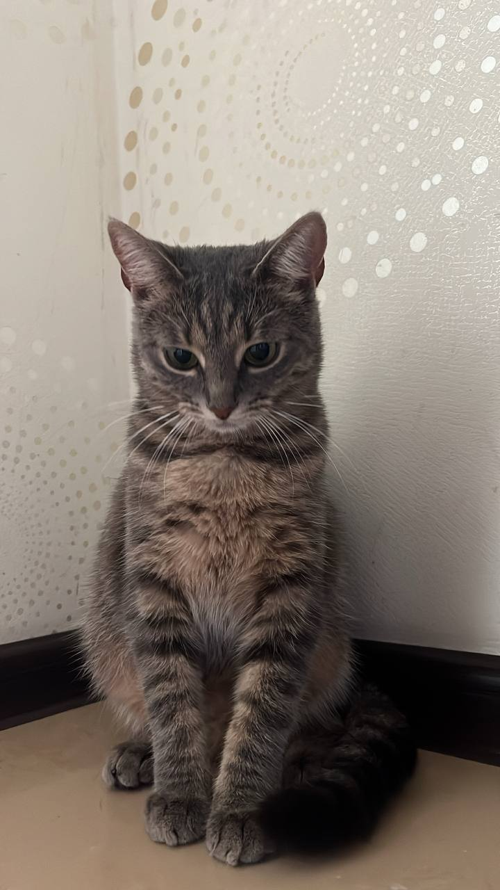
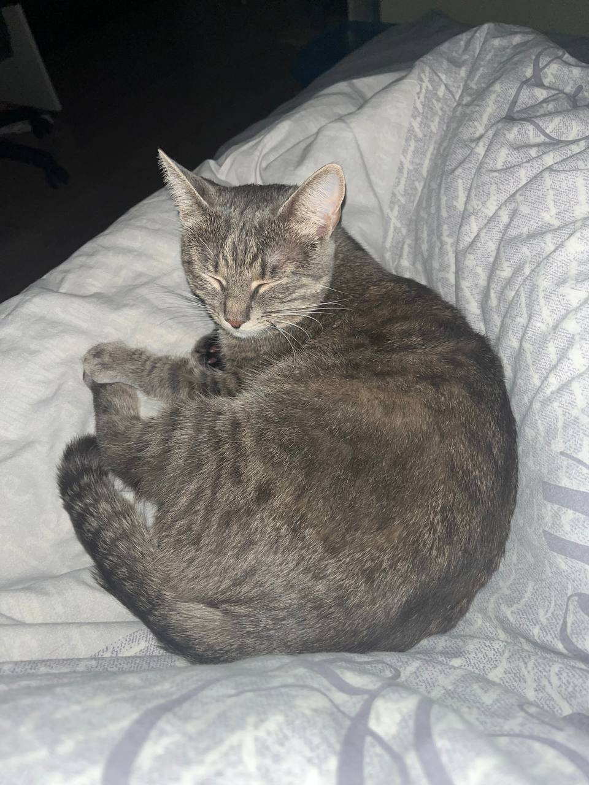
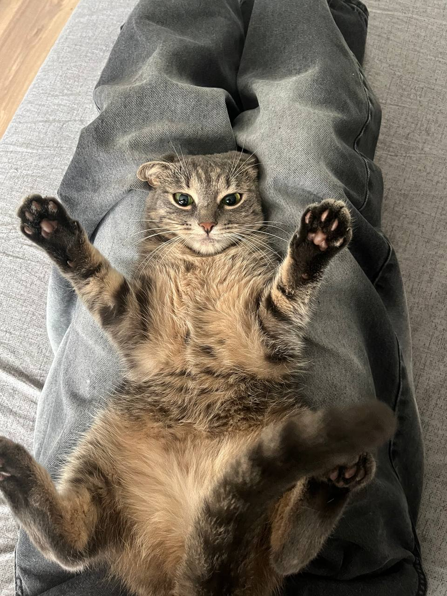
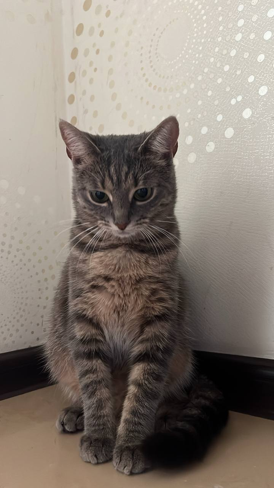
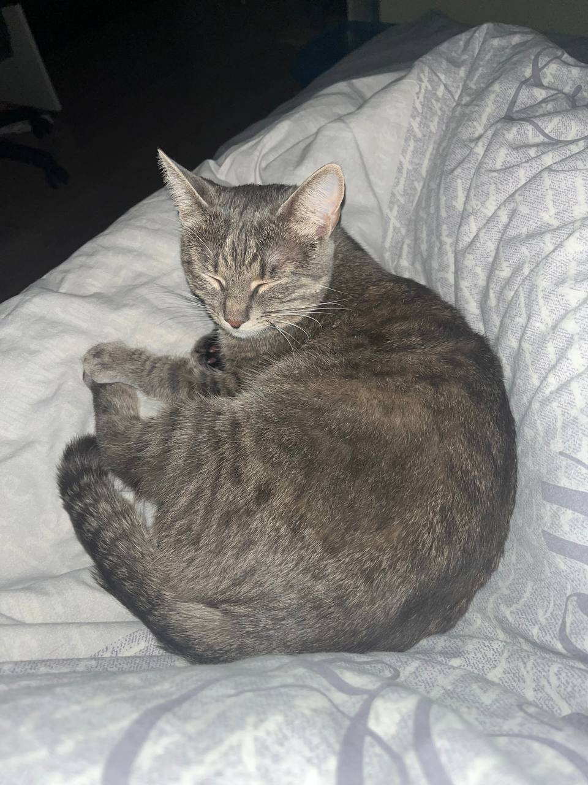

Коты — удивительные существа, которые очаровывают нас своей независимостью
и мягкостью. Они могут часами следить за движением солнечных лучей и легко
находят уютные места для отдыха. Мурлыканье кошек имеет успокаивающий
эффект, а их ловкость и грация просто завораживают. Несмотря на то, что
коты могут казаться отстранёнными, они привязываются к своим хозяевам и
любят проводить время рядом с ними. Неудивительно, что коты уже много
веков считаются символами уюта и домашнего тепла.


 




